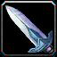

Le paladin observe fidèlement ces règles : protéger le faible, faire régner la justice et vaincre le mal jusque dans les recoins les plus sombres de ce monde. Ces saints guerriers sont dotés de solides armures pour pouvoir affronter les adversaires les plus coriaces. La bénédiction de la Lumière leur permet de soigner les blessures et, dans certains cas, de redonner vie aux morts.
DÉFENSE
L’intrépide paladin porte armure lourde et bouclier, et dispose de pouvoirs obligeant les ennemis à concentrer leurs attaques sur lui, ce qui permet d'épargner les autres membres du groupe.
 DÉGÂTS AU CORPS À CORPS
DÉGÂTS AU CORPS À CORPS
Le paladin canalise la puissance sacrée dans son arme, ce qui lui permet de porter des coups destructeurs.
BÉNÉDICTIONS ET SCEAUX
En tant que champion de l’ordre, le paladin est un allié précieux au sein d’un groupe. Grâce à sa panoplie de bénédictions et de sceaux, il améliore les dégâts et augmente les chances de survie du groupe.
SOINS
Quand ses camarades sont blessés, le paladin dispose de puissants sorts de guérison qui leur permettent de continuer à se battre.
 ARMURES ACCESSIBLES
ARMURES ACCESSIBLES
Tissu, Cuir, Maille, Plaque, Boucliers
Les paladins peuvent utiliser des armures de Tissu, Cuir, Maille, Plaque et des Boucliers. Ils ont donc une armure lourde sans boucliers et très lourde avec boucliers.
 ARMES ACCESSIBLES
Haches à une main, Masses à une main, Épées à une main, Armes d’hast, Haches à deux mains, Masses à deux mains, Épées à deux mains
 TALENTS
TALENTS
Vous pouvez choisir soit la spécialisation Sacré (heal) qui aide à soigner plus efficacement, soit la spécialisation Protection (tank) qui renforce la défense qu’il offre à ses compagnons, ou soit la spécialisation Vindicte qui permet d’infliger de terribles dégâts au nom de la justice.
les raciaux sont indiqués par ordre d'importance
 Alliance :
Alliance :
 Humain :
Humain : Perception : Une fois activé, augmente considérablement votre Détection du camouflage pendant 20 sec.
Perception : Une fois activé, augmente considérablement votre Détection du camouflage pendant 20 sec. L'esprit humain : Augmente l'Esprit de 10%
L'esprit humain : Augmente l'Esprit de 10% Spécialisation Epée : Augmente l'Expertise avec les Epées et les Epées à deux mains de 5
Spécialisation Epée : Augmente l'Expertise avec les Epées et les Epées à deux mains de 5
 Draeneï :
Draeneï : Présence inspirante : Augmente de 1% le toucher des sorts du groupe
Présence inspirante : Augmente de 1% le toucher des sorts du groupe Don des naaru : Rend des points de vie à la cible en 15 sec (Environ 20% des points de vie)
Don des naaru : Rend des points de vie à la cible en 15 sec (Environ 20% des points de vie) Lapidaire : Augmente la compétence en Joaillerie de 5
Lapidaire : Augmente la compétence en Joaillerie de 5 Horde :
Horde :
 Elfe de sang :
Elfe de sang : Torrent arcanique : Réduit au silence tous les ennemis dans un rayon de 8 mètres. Vous gagnez 10 points de mana par charge de Ponction de mana active sur vous
Torrent arcanique : Réduit au silence tous les ennemis dans un rayon de 8 mètres. Vous gagnez 10 points de mana par charge de Ponction de mana active sur vous Ponction de mana : Draine 50 points de mana à votre cible et vous charge d'énergie des Arcanes pandant 10 min cumulable jusqu'à 3 fois
Ponction de mana : Draine 50 points de mana à votre cible et vous charge d'énergie des Arcanes pandant 10 min cumulable jusqu'à 3 fois Résistance à la magie : Toutes les résistances sont augmentées de 5
Résistance à la magie : Toutes les résistances sont augmentées de 5 Affinité avec les arcanes : Compétence en Enchantement augmentée de 10
Affinité avec les arcanes : Compétence en Enchantement augmentée de 10 Le choix
Le choixToutes ces races ont leurs avantages. Si vous comptez jouer dans l'alliance, la meilleur race est l'Humain avec la détection des invisibles.
Et pour finir le Draeneï qui est plus pour PvE.
Par contre pour la horde, vous n'aurez pas le choix, car seul l'Elfe de sang est disponible pour cette classe.
Après tout va dépendre de votre game play.


 Haut de page
Haut de page